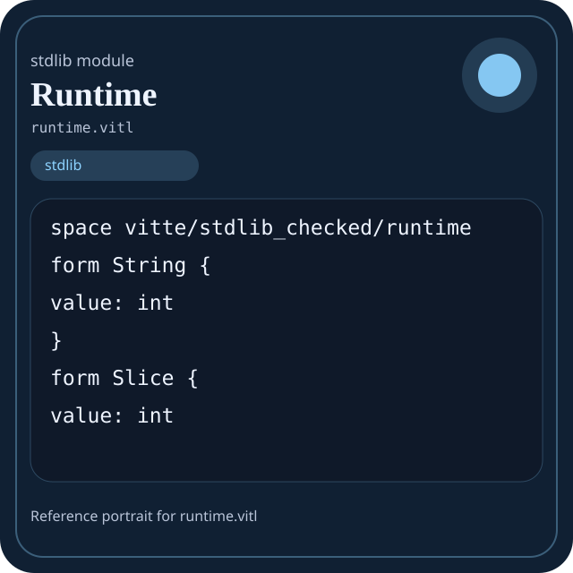

Stdlib module runtime.vitl
This page is a wiki-style reference for one concrete stdlib file. It explains what the file owns, where it fits in the family, and how to decide whether this is the right surface to depend on.

runtime.vitl.Family: stdlib
Kind: public stdlib surface
Page style: this reference follows the same “encyclopedic card + portrait + usage contract” logic as the keyword pages, but for stdlib modules.
Summary
- Overview
- Purpose
- Taxonomy
- Implementation profile
- Top-level API inventory
- Position in family
- Declaration map
- Representative signatures
- How to use this module
- User example
- Keyword coverage
- Source shape
- Source landmarks
- Source organization
- Complete API catalog
- Integration boundaries
- Composition guidance
- Relationship table
- Neighbor modules
Overview
| Field | Value |
|---|---|
| Path | runtime.vitl |
| Family | stdlib |
| Kind | public stdlib surface |
| Line count | 560 |
| Declared procedures | 92 |
| Declared forms/picks | 37 |
`runtime.vitl` is a public stdlib surface inside the `stdlib` family. It should be read as one focused slice of the broader family responsibility: Top-level map of the Vitte standard library and the responsibilities owned by each family.
Purpose
This file should be chosen because of responsibility, not because its name “sounds close enough”. Inside the stdlib family, it carries one focused part of the contract and keeps that responsibility separate from neighboring concerns.
- Domain values start in `core` and `strings`.
- Grouped data moves through `collections` or `data`.
- Structured export goes through `json` and `encoding`.
- Filesystem or process interaction goes through `path`, `io`, `os`, or `sysinfo`.
- Explicit runtime coordination goes through `async`, `threading`, `kernel`, or `ffi`.
Taxonomy
Think of this page as a generated encyclopedia entry rather than a hand-written tutorial. The goal is to show what kind of module this is, how dense it is, and what reading strategy makes sense before depending on it.
- Large algorithm surface: this file exposes many procedures and likely acts as a domain toolkit rather than a single thin wrapper.
- Owns domain vocabulary: the module declares data shapes in addition to executable helpers, so its types are part of the contract.
- Minimal top-level dependencies: the module reads as mostly self-contained from its opening declarations.
- Explicit export surface: the file ends with visible export declarations instead of relying only on implicit namespace discovery.
Implementation profile
This profile is inferred directly from the source text. It does not replace reading the file, but it tells you quickly whether the module is mostly declarative, loop-heavy, branch-heavy, or organized around many small exits.
| Signal | Count | What it suggests |
|---|---|---|
if | 0 | Branching density and local decision-making. |
while | 0 | Loop-heavy or iterative implementation style. |
for | 0 | Collection-style traversal at source level. |
match | 0 | Variant-driven branching or grammar-style decoding. |
let | 5 | Local state and intermediate value density. |
give | 92 | Number of explicit exit points and result shaping. |
Top-level API inventory
| Surface | Items |
|---|---|
| Procedures | alloc, dealloc, runtime_panic, runtime_panic_boundary_begin, runtime_panic_boundary_end, runtime_panic_boundary_triggered, runtime_panic_boundary_code, runtime_panic_boundary_reset, assert_true, print_i32, runtime_unreachable, terminate |
| Forms | String, Slice, Pair, IoError, IpV4, IpV6, SocketAddr, TcpStream, TcpListener, UdpSocket, UdpRecv, JsonMember |
| Picks | OptionString, IoErrorKind, ResultIo, Result, IpAddr, JsonValue, RegexMatch, OptionRegexMatch, FswatchEventKind, HttpMethod |
| Constants | none declared at top level |
| Exports | * |
Imported surfaces
This file does not advertise a top-level `use` surface in its opening declarations. That often means it is either self-contained or an aggregation layer.
Position in family
This file is module 9 of 11 in the stdlib family when ordered by path. By procedure count it ranks 5, and by line count it ranks 6. Those ranks are useful as rough signals of breadth, not as quality judgments.
Declaration map
The declaration map turns raw source into a scan-friendly catalog. It is useful when the file is large enough that a reader wants to orient by kinds of surfaces first.
| Line | Name | Kind | Role |
|---|---|---|---|
| 1 | vitte/stdlib_checked/runtime | space | Declares the namespace that anchors this file in the stdlib tree. |
| 9 | String | form | Introduces a structured data shape that other procedures can exchange. |
| 13 | Slice | form | Introduces a structured data shape that other procedures can exchange. |
| 17 | Pair | form | Introduces a structured data shape that other procedures can exchange. |
| 21 | OptionString | pick | Introduces a tagged variant type used to model distinct outcomes. |
| 25 | IoErrorKind | pick | Introduces a tagged variant type used to model distinct outcomes. |
| 29 | IoError | form | Introduces a structured data shape that other procedures can exchange. |
| 33 | ResultIo | pick | Introduces a tagged variant type used to model distinct outcomes. |
| 37 | Result | pick | Introduces a tagged variant type used to model distinct outcomes. |
| 41 | IpV4 | form | Introduces a structured data shape that other procedures can exchange. |
| 45 | IpV6 | form | Introduces a structured data shape that other procedures can exchange. |
| 49 | IpAddr | pick | Introduces a tagged variant type used to model distinct outcomes. |
| 53 | SocketAddr | form | Introduces a structured data shape that other procedures can exchange. |
| 57 | TcpStream | form | Introduces a structured data shape that other procedures can exchange. |
| 61 | TcpListener | form | Introduces a structured data shape that other procedures can exchange. |
| 65 | UdpSocket | form | Introduces a structured data shape that other procedures can exchange. |
| 69 | UdpRecv | form | Introduces a structured data shape that other procedures can exchange. |
| 73 | JsonValue | pick | Introduces a tagged variant type used to model distinct outcomes. |
| 77 | JsonMember | form | Introduces a structured data shape that other procedures can exchange. |
| 81 | RegexMatch | pick | Introduces a tagged variant type used to model distinct outcomes. |
| 85 | OptionRegexMatch | pick | Introduces a tagged variant type used to model distinct outcomes. |
| 89 | Regex | form | Introduces a structured data shape that other procedures can exchange. |
| 93 | ProcessResult | form | Introduces a structured data shape that other procedures can exchange. |
| 97 | ExitStatus | form | Introduces a structured data shape that other procedures can exchange. |
| 101 | ProcessChild | form | Introduces a structured data shape that other procedures can exchange. |
| 105 | FswatchWatcher | form | Introduces a structured data shape that other procedures can exchange. |
| 109 | FswatchEventKind | pick | Introduces a tagged variant type used to model distinct outcomes. |
| 113 | FswatchEvent | form | Introduces a structured data shape that other procedures can exchange. |
| 117 | DbHandle | form | Introduces a structured data shape that other procedures can exchange. |
| 121 | DbEntry | form | Introduces a structured data shape that other procedures can exchange. |
| 125 | HttpMethod | pick | Introduces a tagged variant type used to model distinct outcomes. |
| 129 | HttpHeader | form | Introduces a structured data shape that other procedures can exchange. |
| 133 | HttpRequest | form | Introduces a structured data shape that other procedures can exchange. |
| 137 | HttpResponse | form | Introduces a structured data shape that other procedures can exchange. |
| 141 | Unit | form | Introduces a structured data shape that other procedures can exchange. |
| 145 | alloc | proc | Represents one top-level surface in the file contract and should be read as part of the module boundary. |
| 149 | dealloc | proc | Represents one top-level surface in the file contract and should be read as part of the module boundary. |
| 153 | runtime_panic | proc | Represents one top-level surface in the file contract and should be read as part of the module boundary. |
| 157 | runtime_panic_boundary_begin | proc | Represents one top-level surface in the file contract and should be read as part of the module boundary. |
| 161 | runtime_panic_boundary_end | proc | Represents one top-level surface in the file contract and should be read as part of the module boundary. |
| 165 | runtime_panic_boundary_triggered | proc | Represents one top-level surface in the file contract and should be read as part of the module boundary. |
| 169 | runtime_panic_boundary_code | proc | Represents one top-level surface in the file contract and should be read as part of the module boundary. |
| 173 | runtime_panic_boundary_reset | proc | Represents one top-level surface in the file contract and should be read as part of the module boundary. |
| 177 | assert_true | proc | Represents one top-level surface in the file contract and should be read as part of the module boundary. |
| 181 | print_i32 | proc | Represents one top-level surface in the file contract and should be read as part of the module boundary. |
| 185 | runtime_unreachable | proc | Represents one top-level surface in the file contract and should be read as part of the module boundary. |
| 189 | terminate | proc | Represents one top-level surface in the file contract and should be read as part of the module boundary. |
| 193 | vitte_c_abi_version | proc | Represents one top-level surface in the file contract and should be read as part of the module boundary. |
| 197 | empty_string | proc | Represents one top-level surface in the file contract and should be read as part of the module boundary. |
| 201 | make_string | proc | Represents one top-level surface in the file contract and should be read as part of the module boundary. |
| 205 | char_to_string | proc | Represents one top-level surface in the file contract and should be read as part of the module boundary. |
| 209 | i32_to_string | proc | Represents one top-level surface in the file contract and should be read as part of the module boundary. |
| 213 | string_concat | proc | Represents one top-level surface in the file contract and should be read as part of the module boundary. |
| 217 | empty_slice_i32 | proc | Represents one top-level surface in the file contract and should be read as part of the module boundary. |
| 221 | empty_slice_string | proc | Represents one top-level surface in the file contract and should be read as part of the module boundary. |
| 225 | slice_push_i32 | proc | Represents one top-level surface in the file contract and should be read as part of the module boundary. |
| 229 | slice_push_string | proc | Represents one top-level surface in the file contract and should be read as part of the module boundary. |
| 233 | list_i32 | proc | Owns a concrete data shape or the operations that maintain it. |
| 237 | list_string | proc | Owns a concrete data shape or the operations that maintain it. |
| 241 | time_now_ms | proc | Represents one top-level surface in the file contract and should be read as part of the module boundary. |
| 245 | time_sleep_ms | proc | Represents one top-level surface in the file contract and should be read as part of the module boundary. |
| 249 | env_get | proc | Represents one top-level surface in the file contract and should be read as part of the module boundary. |
| 253 | env_set | proc | Owns a concrete data shape or the operations that maintain it. |
| 257 | os_platform | proc | Represents one top-level surface in the file contract and should be read as part of the module boundary. |
| 261 | os_arch | proc | Represents one top-level surface in the file contract and should be read as part of the module boundary. |
| 265 | os_home_dir | proc | Represents one top-level surface in the file contract and should be read as part of the module boundary. |
| 269 | os_temp_dir | proc | Represents one top-level surface in the file contract and should be read as part of the module boundary. |
| 273 | os_current_dir | proc | Represents one top-level surface in the file contract and should be read as part of the module boundary. |
| 277 | os_set_current_dir | proc | Owns a concrete data shape or the operations that maintain it. |
| 281 | os_exe_path | proc | Owns path semantics, traversal, or normalization. |
| 285 | os_path_sep | proc | Owns path semantics, traversal, or normalization. |
| 289 | process_run | proc | Represents one top-level surface in the file contract and should be read as part of the module boundary. |
| 293 | process_run_args | proc | Represents one top-level surface in the file contract and should be read as part of the module boundary. |
| 297 | process_run_shell | proc | Represents one top-level surface in the file contract and should be read as part of the module boundary. |
| 301 | process_spawn | proc | Represents one top-level surface in the file contract and should be read as part of the module boundary. |
| 305 | process_wait | proc | Represents one top-level surface in the file contract and should be read as part of the module boundary. |
| 309 | process_kill | proc | Represents one top-level surface in the file contract and should be read as part of the module boundary. |
| 313 | process_stdout | proc | Represents one top-level surface in the file contract and should be read as part of the module boundary. |
| 317 | process_stderr | proc | Represents one top-level surface in the file contract and should be read as part of the module boundary. |
| 321 | json_parse | proc | Transforms an input representation into a structured internal value. |
| 325 | json_stringify | proc | Turns internal values into a transport or textual representation. |
| 329 | http_request | proc | Represents one top-level surface in the file contract and should be read as part of the module boundary. |
| 333 | crypto_sha256 | proc | Represents one top-level surface in the file contract and should be read as part of the module boundary. |
| 337 | crypto_sha1 | proc | Represents one top-level surface in the file contract and should be read as part of the module boundary. |
| 341 | crypto_hmac_sha256 | proc | Implements a security-sensitive transformation in the crypto boundary. |
| 345 | crypto_rand_bytes | proc | Represents one top-level surface in the file contract and should be read as part of the module boundary. |
| 349 | tcp_connect | proc | Represents one top-level surface in the file contract and should be read as part of the module boundary. |
| 353 | tcp_bind | proc | Represents one top-level surface in the file contract and should be read as part of the module boundary. |
| 357 | tcp_accept | proc | Represents one top-level surface in the file contract and should be read as part of the module boundary. |
| 361 | tcp_read | proc | Owns byte movement or host I/O interaction. |
| 365 | tcp_write | proc | Owns byte movement or host I/O interaction. |
| 369 | tcp_close | proc | Represents one top-level surface in the file contract and should be read as part of the module boundary. |
| 373 | udp_bind | proc | Represents one top-level surface in the file contract and should be read as part of the module boundary. |
| 377 | udp_recv_from | proc | Represents one top-level surface in the file contract and should be read as part of the module boundary. |
| 381 | udp_send_to | proc | Represents one top-level surface in the file contract and should be read as part of the module boundary. |
| 385 | udp_close | proc | Represents one top-level surface in the file contract and should be read as part of the module boundary. |
| 389 | udp_set_nonblocking | proc | Owns a concrete data shape or the operations that maintain it. |
| 393 | udp_set_read_timeout | proc | Owns byte movement or host I/O interaction. |
| 397 | udp_set_write_timeout | proc | Owns byte movement or host I/O interaction. |
| 401 | tcp_set_nonblocking | proc | Owns a concrete data shape or the operations that maintain it. |
| 405 | tcp_set_read_timeout | proc | Owns byte movement or host I/O interaction. |
| 409 | tcp_set_write_timeout | proc | Owns byte movement or host I/O interaction. |
| 413 | regex_compile | proc | Represents one top-level surface in the file contract and should be read as part of the module boundary. |
| 417 | regex_is_match | proc | Represents one top-level surface in the file contract and should be read as part of the module boundary. |
| 421 | regex_find | proc | Represents one top-level surface in the file contract and should be read as part of the module boundary. |
| 425 | regex_replace | proc | Represents one top-level surface in the file contract and should be read as part of the module boundary. |
| 429 | regex_split | proc | Owns path semantics, traversal, or normalization. |
| 433 | fswatch_watch | proc | Represents one top-level surface in the file contract and should be read as part of the module boundary. |
| 437 | fswatch_poll | proc | Represents one top-level surface in the file contract and should be read as part of the module boundary. |
| 441 | fswatch_close | proc | Represents one top-level surface in the file contract and should be read as part of the module boundary. |
| 445 | db_open | proc | Represents one top-level surface in the file contract and should be read as part of the module boundary. |
| 449 | db_close | proc | Represents one top-level surface in the file contract and should be read as part of the module boundary. |
| 453 | db_set | proc | Owns a concrete data shape or the operations that maintain it. |
| 457 | db_get | proc | Represents one top-level surface in the file contract and should be read as part of the module boundary. |
| 461 | db_delete | proc | Represents one top-level surface in the file contract and should be read as part of the module boundary. |
| 465 | db_keys | proc | Represents one top-level surface in the file contract and should be read as part of the module boundary. |
| 469 | db_keys_prefix | proc | Represents one top-level surface in the file contract and should be read as part of the module boundary. |
| 473 | db_batch_put | proc | Represents one top-level surface in the file contract and should be read as part of the module boundary. |
| 477 | db_begin | proc | Represents one top-level surface in the file contract and should be read as part of the module boundary. |
| 481 | db_commit | proc | Represents one top-level surface in the file contract and should be read as part of the module boundary. |
| 485 | db_rollback | proc | Represents one top-level surface in the file contract and should be read as part of the module boundary. |
| 489 | RuntimeManifest | form | Introduces a structured data shape that other procedures can exchange. |
| 495 | RuntimeHealth | form | Introduces a structured data shape that other procedures can exchange. |
| 503 | RuntimeSummary | form | Introduces a structured data shape that other procedures can exchange. |
| 508 | runtime_version | proc | Represents one top-level surface in the file contract and should be read as part of the module boundary. |
| 512 | runtime_ready | proc | Represents one top-level surface in the file contract and should be read as part of the module boundary. |
| 516 | runtime_manifest | proc | Represents one top-level surface in the file contract and should be read as part of the module boundary. |
| 524 | runtime_health | proc | Represents one top-level surface in the file contract and should be read as part of the module boundary. |
| 538 | runtime_summary | proc | Represents one top-level surface in the file contract and should be read as part of the module boundary. |
| 545 | runtime_selftest | proc | Represents one top-level surface in the file contract and should be read as part of the module boundary. |
The table is exhaustive for top-level declarations of the selected kinds. This file declares 130 matching surfaces.
Representative signatures
These signatures are shown in source order so the page keeps the feel of a reference manual, not just a keyword cloud.
form String {(line 9)form Slice {(line 13)form Pair {(line 17)pick OptionString {(line 21)pick IoErrorKind {(line 25)form IoError {(line 29)pick ResultIo {(line 33)pick Result {(line 37)form IpV4 {(line 41)form IpV6 {(line 45)pick IpAddr {(line 49)form SocketAddr {(line 53)form TcpStream {(line 57)form TcpListener {(line 61)form UdpSocket {(line 65)form UdpRecv {(line 69)pick JsonValue {(line 73)form JsonMember {(line 77)
The list is intentionally capped here; the source file declares 129 matching signatures in total.
How to use this module
Start by reading the file as an ownership boundary. Ask three questions: what enters this module, what stable types or procedures it exports, and what adjacent module should stay outside of it.
- Read
spaceand top-level imports first so the ownership boundary ofruntime.vitlis explicit. - Read declared forms and picks before algorithms so the data vocabulary is stable in your head.
- Traverse procedures in source order; the early helpers usually explain the naming and numeric conventions used later.
- Only after that compare neighbor modules, because the right boundary choice matters more than memorizing one helper name.
User example
This example is generated from the actual stdlib module surface. Its job is not to be the smallest snippet possible; its job is to show a realistic consumer-shaped file that exercises the module and mirrors the language keywords the module itself relies on.
space demo/runtime
form DemoState {
ready: bool,
note: string
}
proc run_example() -> DemoState {
let ready: bool = runtime_ready()
give DemoState { ready: ready, note: "ok" }
}
export run_exampleKeyword coverage
This table makes the “all keywords of the module” requirement auditable. It compares the detected Vitte keywords in the source file with the generated consumer example above.
| Keyword | Present in module source | Used in generated user example |
|---|---|---|
space | yes | yes |
form | yes | yes |
pick | yes | no |
proc | yes | yes |
let | yes | yes |
give | yes | yes |
export | yes | yes |
true | yes | no |
and | yes | no |
Keywords still not exercised directly in the generated snippet: pick, true, and. The page still lists them here so the gap is visible.
Source shape
space vitte/stdlib_checked/runtime
form String {
value: int
}
form Slice {
value: int
}
form Pair {
value: int
}The excerpt is not meant to replace the file. It exists to make the module recognizable at first glance, the same way a Wikipedia infobox helps the reader orient before reading the whole article.
Source landmarks
Large files are easier to retain when they have visible landmarks. When the source contains explicit section banners, they are surfaced here; otherwise the first major declarations are used as anchors.
- Line 1:
space vitte/stdlib_checked/runtime - Line 9:
form String { - Line 13:
form Slice { - Line 17:
form Pair { - Line 21:
pick OptionString { - Line 25:
pick IoErrorKind { - Line 29:
form IoError { - Line 33:
pick ResultIo {
Source organization
When a file carries its own internal chaptering, those chapters usually reveal the intended reading order better than a flat symbol list. This section reconstructs that organization from the source itself.
File surfaces
Top-level items: 131. Procedures: 92. Data surfaces: 37. Constants: 0.
First visible names: vitte/stdlib_checked/runtime, String, Slice, Pair, OptionString, IoErrorKind, IoError, ResultIo, Result, IpV4
Complete API catalog
This catalog is the exhaustive file-level index for the module. It is intentionally closer to a generated encyclopedia appendix than to a tutorial summary.
Data surfaces
| Line | Name | Signature | Role |
|---|---|---|---|
| 9 | String | form String { | Introduces a structured data shape that other procedures can exchange. |
| 13 | Slice | form Slice { | Introduces a structured data shape that other procedures can exchange. |
| 17 | Pair | form Pair { | Introduces a structured data shape that other procedures can exchange. |
| 21 | OptionString | pick OptionString { | Introduces a tagged variant type used to model distinct outcomes. |
| 25 | IoErrorKind | pick IoErrorKind { | Introduces a tagged variant type used to model distinct outcomes. |
| 29 | IoError | form IoError { | Introduces a structured data shape that other procedures can exchange. |
| 33 | ResultIo | pick ResultIo { | Introduces a tagged variant type used to model distinct outcomes. |
| 37 | Result | pick Result { | Introduces a tagged variant type used to model distinct outcomes. |
| 41 | IpV4 | form IpV4 { | Introduces a structured data shape that other procedures can exchange. |
| 45 | IpV6 | form IpV6 { | Introduces a structured data shape that other procedures can exchange. |
| 49 | IpAddr | pick IpAddr { | Introduces a tagged variant type used to model distinct outcomes. |
| 53 | SocketAddr | form SocketAddr { | Introduces a structured data shape that other procedures can exchange. |
| 57 | TcpStream | form TcpStream { | Introduces a structured data shape that other procedures can exchange. |
| 61 | TcpListener | form TcpListener { | Introduces a structured data shape that other procedures can exchange. |
| 65 | UdpSocket | form UdpSocket { | Introduces a structured data shape that other procedures can exchange. |
| 69 | UdpRecv | form UdpRecv { | Introduces a structured data shape that other procedures can exchange. |
| 73 | JsonValue | pick JsonValue { | Introduces a tagged variant type used to model distinct outcomes. |
| 77 | JsonMember | form JsonMember { | Introduces a structured data shape that other procedures can exchange. |
| 81 | RegexMatch | pick RegexMatch { | Introduces a tagged variant type used to model distinct outcomes. |
| 85 | OptionRegexMatch | pick OptionRegexMatch { | Introduces a tagged variant type used to model distinct outcomes. |
| 89 | Regex | form Regex { | Introduces a structured data shape that other procedures can exchange. |
| 93 | ProcessResult | form ProcessResult { | Introduces a structured data shape that other procedures can exchange. |
| 97 | ExitStatus | form ExitStatus { | Introduces a structured data shape that other procedures can exchange. |
| 101 | ProcessChild | form ProcessChild { | Introduces a structured data shape that other procedures can exchange. |
| 105 | FswatchWatcher | form FswatchWatcher { | Introduces a structured data shape that other procedures can exchange. |
| 109 | FswatchEventKind | pick FswatchEventKind { | Introduces a tagged variant type used to model distinct outcomes. |
| 113 | FswatchEvent | form FswatchEvent { | Introduces a structured data shape that other procedures can exchange. |
| 117 | DbHandle | form DbHandle { | Introduces a structured data shape that other procedures can exchange. |
| 121 | DbEntry | form DbEntry { | Introduces a structured data shape that other procedures can exchange. |
| 125 | HttpMethod | pick HttpMethod { | Introduces a tagged variant type used to model distinct outcomes. |
| 129 | HttpHeader | form HttpHeader { | Introduces a structured data shape that other procedures can exchange. |
| 133 | HttpRequest | form HttpRequest { | Introduces a structured data shape that other procedures can exchange. |
| 137 | HttpResponse | form HttpResponse { | Introduces a structured data shape that other procedures can exchange. |
| 141 | Unit | form Unit { | Introduces a structured data shape that other procedures can exchange. |
| 489 | RuntimeManifest | form RuntimeManifest { | Introduces a structured data shape that other procedures can exchange. |
| 495 | RuntimeHealth | form RuntimeHealth { | Introduces a structured data shape that other procedures can exchange. |
| 503 | RuntimeSummary | form RuntimeSummary { | Introduces a structured data shape that other procedures can exchange. |
Procedures
| Line | Name | Signature | Role |
|---|---|---|---|
| 145 | alloc | proc alloc() -> int { | Represents one top-level surface in the file contract and should be read as part of the module boundary. |
| 149 | dealloc | proc dealloc() -> int { | Represents one top-level surface in the file contract and should be read as part of the module boundary. |
| 153 | runtime_panic | proc runtime_panic() -> int { | Represents one top-level surface in the file contract and should be read as part of the module boundary. |
| 157 | runtime_panic_boundary_begin | proc runtime_panic_boundary_begin() -> int { | Represents one top-level surface in the file contract and should be read as part of the module boundary. |
| 161 | runtime_panic_boundary_end | proc runtime_panic_boundary_end() -> int { | Represents one top-level surface in the file contract and should be read as part of the module boundary. |
| 165 | runtime_panic_boundary_triggered | proc runtime_panic_boundary_triggered() -> int { | Represents one top-level surface in the file contract and should be read as part of the module boundary. |
| 169 | runtime_panic_boundary_code | proc runtime_panic_boundary_code() -> int { | Represents one top-level surface in the file contract and should be read as part of the module boundary. |
| 173 | runtime_panic_boundary_reset | proc runtime_panic_boundary_reset() -> int { | Represents one top-level surface in the file contract and should be read as part of the module boundary. |
| 177 | assert_true | proc assert_true() -> int { | Represents one top-level surface in the file contract and should be read as part of the module boundary. |
| 181 | print_i32 | proc print_i32() -> int { | Represents one top-level surface in the file contract and should be read as part of the module boundary. |
| 185 | runtime_unreachable | proc runtime_unreachable() -> int { | Represents one top-level surface in the file contract and should be read as part of the module boundary. |
| 189 | terminate | proc terminate() -> int { | Represents one top-level surface in the file contract and should be read as part of the module boundary. |
| 193 | vitte_c_abi_version | proc vitte_c_abi_version() -> int { | Represents one top-level surface in the file contract and should be read as part of the module boundary. |
| 197 | empty_string | proc empty_string() -> int { | Represents one top-level surface in the file contract and should be read as part of the module boundary. |
| 201 | make_string | proc make_string() -> int { | Represents one top-level surface in the file contract and should be read as part of the module boundary. |
| 205 | char_to_string | proc char_to_string() -> int { | Represents one top-level surface in the file contract and should be read as part of the module boundary. |
| 209 | i32_to_string | proc i32_to_string() -> int { | Represents one top-level surface in the file contract and should be read as part of the module boundary. |
| 213 | string_concat | proc string_concat() -> int { | Represents one top-level surface in the file contract and should be read as part of the module boundary. |
| 217 | empty_slice_i32 | proc empty_slice_i32() -> int { | Represents one top-level surface in the file contract and should be read as part of the module boundary. |
| 221 | empty_slice_string | proc empty_slice_string() -> int { | Represents one top-level surface in the file contract and should be read as part of the module boundary. |
| 225 | slice_push_i32 | proc slice_push_i32() -> int { | Represents one top-level surface in the file contract and should be read as part of the module boundary. |
| 229 | slice_push_string | proc slice_push_string() -> int { | Represents one top-level surface in the file contract and should be read as part of the module boundary. |
| 233 | list_i32 | proc list_i32() -> int { | Owns a concrete data shape or the operations that maintain it. |
| 237 | list_string | proc list_string() -> int { | Owns a concrete data shape or the operations that maintain it. |
| 241 | time_now_ms | proc time_now_ms() -> int { | Represents one top-level surface in the file contract and should be read as part of the module boundary. |
| 245 | time_sleep_ms | proc time_sleep_ms() -> int { | Represents one top-level surface in the file contract and should be read as part of the module boundary. |
| 249 | env_get | proc env_get() -> int { | Represents one top-level surface in the file contract and should be read as part of the module boundary. |
| 253 | env_set | proc env_set() -> int { | Owns a concrete data shape or the operations that maintain it. |
| 257 | os_platform | proc os_platform() -> int { | Represents one top-level surface in the file contract and should be read as part of the module boundary. |
| 261 | os_arch | proc os_arch() -> int { | Represents one top-level surface in the file contract and should be read as part of the module boundary. |
| 265 | os_home_dir | proc os_home_dir() -> int { | Represents one top-level surface in the file contract and should be read as part of the module boundary. |
| 269 | os_temp_dir | proc os_temp_dir() -> int { | Represents one top-level surface in the file contract and should be read as part of the module boundary. |
| 273 | os_current_dir | proc os_current_dir() -> int { | Represents one top-level surface in the file contract and should be read as part of the module boundary. |
| 277 | os_set_current_dir | proc os_set_current_dir() -> int { | Owns a concrete data shape or the operations that maintain it. |
| 281 | os_exe_path | proc os_exe_path() -> int { | Owns path semantics, traversal, or normalization. |
| 285 | os_path_sep | proc os_path_sep() -> int { | Owns path semantics, traversal, or normalization. |
| 289 | process_run | proc process_run() -> int { | Represents one top-level surface in the file contract and should be read as part of the module boundary. |
| 293 | process_run_args | proc process_run_args() -> int { | Represents one top-level surface in the file contract and should be read as part of the module boundary. |
| 297 | process_run_shell | proc process_run_shell() -> int { | Represents one top-level surface in the file contract and should be read as part of the module boundary. |
| 301 | process_spawn | proc process_spawn() -> int { | Represents one top-level surface in the file contract and should be read as part of the module boundary. |
| 305 | process_wait | proc process_wait() -> int { | Represents one top-level surface in the file contract and should be read as part of the module boundary. |
| 309 | process_kill | proc process_kill() -> int { | Represents one top-level surface in the file contract and should be read as part of the module boundary. |
| 313 | process_stdout | proc process_stdout() -> int { | Represents one top-level surface in the file contract and should be read as part of the module boundary. |
| 317 | process_stderr | proc process_stderr() -> int { | Represents one top-level surface in the file contract and should be read as part of the module boundary. |
| 321 | json_parse | proc json_parse() -> int { | Transforms an input representation into a structured internal value. |
| 325 | json_stringify | proc json_stringify() -> int { | Turns internal values into a transport or textual representation. |
| 329 | http_request | proc http_request() -> int { | Represents one top-level surface in the file contract and should be read as part of the module boundary. |
| 333 | crypto_sha256 | proc crypto_sha256() -> int { | Represents one top-level surface in the file contract and should be read as part of the module boundary. |
| 337 | crypto_sha1 | proc crypto_sha1() -> int { | Represents one top-level surface in the file contract and should be read as part of the module boundary. |
| 341 | crypto_hmac_sha256 | proc crypto_hmac_sha256() -> int { | Implements a security-sensitive transformation in the crypto boundary. |
| 345 | crypto_rand_bytes | proc crypto_rand_bytes() -> int { | Represents one top-level surface in the file contract and should be read as part of the module boundary. |
| 349 | tcp_connect | proc tcp_connect() -> int { | Represents one top-level surface in the file contract and should be read as part of the module boundary. |
| 353 | tcp_bind | proc tcp_bind() -> int { | Represents one top-level surface in the file contract and should be read as part of the module boundary. |
| 357 | tcp_accept | proc tcp_accept() -> int { | Represents one top-level surface in the file contract and should be read as part of the module boundary. |
| 361 | tcp_read | proc tcp_read() -> int { | Owns byte movement or host I/O interaction. |
| 365 | tcp_write | proc tcp_write() -> int { | Owns byte movement or host I/O interaction. |
| 369 | tcp_close | proc tcp_close() -> int { | Represents one top-level surface in the file contract and should be read as part of the module boundary. |
| 373 | udp_bind | proc udp_bind() -> int { | Represents one top-level surface in the file contract and should be read as part of the module boundary. |
| 377 | udp_recv_from | proc udp_recv_from() -> int { | Represents one top-level surface in the file contract and should be read as part of the module boundary. |
| 381 | udp_send_to | proc udp_send_to() -> int { | Represents one top-level surface in the file contract and should be read as part of the module boundary. |
| 385 | udp_close | proc udp_close() -> int { | Represents one top-level surface in the file contract and should be read as part of the module boundary. |
| 389 | udp_set_nonblocking | proc udp_set_nonblocking() -> int { | Owns a concrete data shape or the operations that maintain it. |
| 393 | udp_set_read_timeout | proc udp_set_read_timeout() -> int { | Owns byte movement or host I/O interaction. |
| 397 | udp_set_write_timeout | proc udp_set_write_timeout() -> int { | Owns byte movement or host I/O interaction. |
| 401 | tcp_set_nonblocking | proc tcp_set_nonblocking() -> int { | Owns a concrete data shape or the operations that maintain it. |
| 405 | tcp_set_read_timeout | proc tcp_set_read_timeout() -> int { | Owns byte movement or host I/O interaction. |
| 409 | tcp_set_write_timeout | proc tcp_set_write_timeout() -> int { | Owns byte movement or host I/O interaction. |
| 413 | regex_compile | proc regex_compile() -> int { | Represents one top-level surface in the file contract and should be read as part of the module boundary. |
| 417 | regex_is_match | proc regex_is_match() -> int { | Represents one top-level surface in the file contract and should be read as part of the module boundary. |
| 421 | regex_find | proc regex_find() -> int { | Represents one top-level surface in the file contract and should be read as part of the module boundary. |
| 425 | regex_replace | proc regex_replace() -> int { | Represents one top-level surface in the file contract and should be read as part of the module boundary. |
| 429 | regex_split | proc regex_split() -> int { | Owns path semantics, traversal, or normalization. |
| 433 | fswatch_watch | proc fswatch_watch() -> int { | Represents one top-level surface in the file contract and should be read as part of the module boundary. |
| 437 | fswatch_poll | proc fswatch_poll() -> int { | Represents one top-level surface in the file contract and should be read as part of the module boundary. |
| 441 | fswatch_close | proc fswatch_close() -> int { | Represents one top-level surface in the file contract and should be read as part of the module boundary. |
| 445 | db_open | proc db_open() -> int { | Represents one top-level surface in the file contract and should be read as part of the module boundary. |
| 449 | db_close | proc db_close() -> int { | Represents one top-level surface in the file contract and should be read as part of the module boundary. |
| 453 | db_set | proc db_set() -> int { | Owns a concrete data shape or the operations that maintain it. |
| 457 | db_get | proc db_get() -> int { | Represents one top-level surface in the file contract and should be read as part of the module boundary. |
| 461 | db_delete | proc db_delete() -> int { | Represents one top-level surface in the file contract and should be read as part of the module boundary. |
| 465 | db_keys | proc db_keys() -> int { | Represents one top-level surface in the file contract and should be read as part of the module boundary. |
| 469 | db_keys_prefix | proc db_keys_prefix() -> int { | Represents one top-level surface in the file contract and should be read as part of the module boundary. |
| 473 | db_batch_put | proc db_batch_put() -> int { | Represents one top-level surface in the file contract and should be read as part of the module boundary. |
| 477 | db_begin | proc db_begin() -> int { | Represents one top-level surface in the file contract and should be read as part of the module boundary. |
| 481 | db_commit | proc db_commit() -> int { | Represents one top-level surface in the file contract and should be read as part of the module boundary. |
| 485 | db_rollback | proc db_rollback() -> int { | Represents one top-level surface in the file contract and should be read as part of the module boundary. |
| 508 | runtime_version | proc runtime_version() -> string { | Represents one top-level surface in the file contract and should be read as part of the module boundary. |
| 512 | runtime_ready | proc runtime_ready() -> bool { | Represents one top-level surface in the file contract and should be read as part of the module boundary. |
| 516 | runtime_manifest | proc runtime_manifest() -> RuntimeManifest { | Represents one top-level surface in the file contract and should be read as part of the module boundary. |
| 524 | runtime_health | proc runtime_health() -> RuntimeHealth { | Represents one top-level surface in the file contract and should be read as part of the module boundary. |
| 538 | runtime_summary | proc runtime_summary() -> RuntimeSummary { | Represents one top-level surface in the file contract and should be read as part of the module boundary. |
| 545 | runtime_selftest | proc runtime_selftest() -> bool { | Represents one top-level surface in the file contract and should be read as part of the module boundary. |
Exports
| Line | Name | Signature | Role |
|---|---|---|---|
| 560 | * | export * | Re-exports surfaces that the module wants to expose as part of its public boundary. |
Integration boundaries
Within stdlib, this file should remain focused. If a future helper changes the host boundary, scheduling boundary, or data-shape boundary, it probably belongs in a neighbor module instead of being added here by convenience.
- Family responsibility: Top-level map of the Vitte standard library and the responsibilities owned by each family.
- Family architecture role: A realistic Vitte program usually starts in `core`, grows through `collections` or `data`, crosses textual boundaries with `json` or `encoding`, touches the host with `path` or `io`, and only then reaches system-facing families like `kernel`, `ffi`, `async`, or `threading`.
Composition guidance
Choose this module when
- Choose
runtime.vitlwhen the main question is owned by this module rather than by transport, storage, orchestration, or user-interface code. - Domain values start in `core` and `strings`.
- Grouped data moves through `collections` or `data`.
- Structured export goes through `json` and `encoding`.
- Filesystem or process interaction goes through `path`, `io`, `os`, or `sysinfo`.
- Explicit runtime coordination goes through `async`, `threading`, `kernel`, or `ffi`.
Pause before extending it when
- Avoid extending this file when the new helper mostly changes the boundary to host I/O, runtime coordination, or foreign integration instead of staying inside
stdlib. - Check nearby modules such as
GETTING_STARTED.vitl,core_alias.vitl,datetime.vitlbefore adding convenience wrappers here.
Relationship table
This table keeps the page closer to a real encyclopedia entry: a module is easier to understand when compared with its nearest alternatives in the same family.
| Neighbor | Procedures | Data surfaces | Why compare it |
|---|---|---|---|
GETTING_STARTED.vitl | 26 | 0 | Shares the same family boundary but carries a distinct slice of responsibility. |
core_alias.vitl | 0 | 0 | Shares the same family boundary but carries a distinct slice of responsibility. |
datetime.vitl | 138 | 16 | Shares the same family boundary but carries a distinct slice of responsibility. |
graphics.vitl | 5 | 0 | Shares the same family boundary but carries a distinct slice of responsibility. |
memory.vitl | 137 | 16 | Shares the same family boundary but carries a distinct slice of responsibility. |
mod.vit | 16 | 2 | Shares the same family boundary but carries a distinct slice of responsibility. |
os.vitl | 167 | 30 | Shares the same family boundary but carries a distinct slice of responsibility. |
regex.vitl | 44 | 9 | Shares the same family boundary but carries a distinct slice of responsibility. |